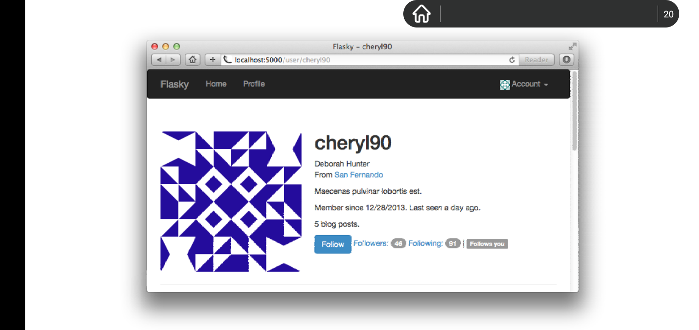

Chapter 12: Folllowers
Overview
社交网站允许用户和其他用户联系。不同网站称呼这种关系各有不同，比如有: followers, friends, contacts, connections, or buddies,无论这种功能叫啥名字，但是功能都是相同的。上述过程牵扯到跟踪两个用户之间的定向链接(directional links), 并在数据库查询中使用这些定向链接。
本章将学习如何给flasky添加跟随功能。用户可以跟随其他用户，并且用户可以在他们主页上只显示他们跟随的用户所发表的博客日志。
Database Relatioinships Revisited
在章节5中，数据库通过使用关系(relationships)来链接分属于不同表的记录。一对多关系是最常用的关系，表示某个表中的单个记录和另一表的某些记录链接在一起。通常这种一对多关系是通过在代表多端的表中添加一个外键，该外键指向代表单端的表中的某一字段，一般是主键。当前flasky网站实现了两个一对多关系: 一种是将某个用户角色和一些用户链接在一起，另一个是将某个用户和他写的所有博客链接在一起。
而其他类型的关系都可以从一对多关系中发展而来。而多对一关系是一种一对多关系，只是它是从多端视角来看的。而一对一关系是一对多关系的简化版本，在这里是在原先的多端中限制只能关联最多一个记录。唯一一种不能使用一对多关系的变种来实现的是多对多关系，这种关系两端都对应有多个记录。后面小结将详细介绍多对多关系。
Many-to-Many Relationships
不管是多对一关系，一对多关系还是一对一关系，这些关系至少有一边只能存在一个元素(实体，记录)，因此在这两撮相关记录之间的链接可以用外键实现，该元素指向那个单一的元素(在一个用户可以拥有多个博客的例子里，外键的定义是在多端，也就是博客模型那，而该外键的指向单端，也就是User模型中的id.也就是说，每一条博客记录都有author_id外键字段，而多个博客的author_id可以引用同一User的id)。但是怎样实现两端都代表多端的关系呢?(这里参考成员模型和组织模型的例子。一个成员可以加入多个不同的组织，而一个组织可以包含多个不同的成员。在成员模型中添加外键字段organization_id,在组织模型中添加外键字段member_id.)
考虑以下多对多关系的经典例子: 一个数据库包含了学生和这些学生参与的课程。很明显，你不能仅仅向学生表中添加指向课程id的class_id外键，因为一个学生可以参加多个课程，也就是说必须对应多个class_id.(通过过滤拥有相同class_id外键字段值的学生记录，可以查询出有哪些学生参加了指定的课程。这是外键的应用，也是class.members的实现。在class模型中添加student_id外键字段，这样每个课程最多只有一个学生参与，但是每个课程普遍存在多个学生参与。通过过滤哪那些student_id字段值与某个指定学生id值相同的class记录，可以查找到某个学生参与的所有课程，这也是student.classes的实现。两个方向的关系都是通过外键来实现的。)--一个外键不够。类似的，你不能只在classes表中添加一个指向学生记录id的student_id外键字段，因为上某个课程的学生不可能只有一个。关系两端都需要定义多个外键。
解决方案是向数据库添加第三个表，叫做关联表(该关联表由student_id和class_id组成，每一条记录保存的是某个学生和某个课程之间的关系连线。如何使用该表?过滤所有拥有指定student_id值的关联记录，过滤后的结果关联集代表与该学生关联的所有课程。过滤所有具有指定class_id的关联记录，结果集代表参加该课程的所有学生。)因此多对多关系可以分解成两个都指向关联表的一对多关系。以下是该多对多关系的图表:
本例中的关联表也叫做注册表(该表中的记录是对两个实体之间双向直线关系的一种注册)。该表中的每一条记录代表某个学生对某个课程的独立注册。
查询多对多关系经历两个过程。为了获取一个学生参加的所有课程，你从学生表和注册表之间的一对多关系开始，获取那些具有指定学生id值的student_id字段的注册记录。然后嘞，从图表中的多对一方向来遍历class表和注册表之间的一对多关系，以过滤后的注册记录中的class_id来遍历某个学生所参加的所有课程。查询某个课程所参加的学生也是类似的。从class表开始，获取注册记录，然后根据所获取的注册记录来获取与这些注册记录相关联的学生。
遍历两个一对多关系来获取查询结果似乎很困难，但是对于上面那个简单多对多关系来说，sqlalchemy做了绝大多数的工作来简化用户创建多对多任务的流程。以下是多对多关系的代码表示:
registration = db.Table('registrations',
db.Column('student_id', db.Integer, db.ForeignKey('students.id')),
db.Column('class_id', db.Integer, db.ForeignKey('classes.id'))
) # 使用方法来创建表
class Student(db.Model):
__tablename__ = 'students'
id = db.Column(db.Integer, primary_key=True)
name = db.Column(db.String)
# relationship()方法主要向关系的两端添加字段，这些字段的值由sqlalchemy底层根据外键执行查询所得。并且可以指定两个字段的加载方式lazy
classes = db.relationship('Class',
secondary=registrations,
backref=db.backref('students', lazy='dynamic'),
lazy='dynamic')
class Class(db.Model):
__tablename__ = 'classes'
id = db.Column(db.Integer, primary_key=True)
name = db.Column(db.String)
在一对多关系中关系是由db.relationship()构造的，但是在多对多关系里，除了使用db.relationship()以外，还得使用secondary参数来指定使用额外数据表,这里是关联表。关系的定义(db.relationship()的调用)可以在任何这两个类之中，不管如何，由backref参数来暴露关系定义端的另一端的关系。(这里的关系用字段更贴切)。这里关联表定义为一个简单的table, 而不是Model，因为该table由sqlalchemy自己管理。
classes relationship(student中的classes字段)使用列表语义，这使得处理多对多关系变得相对简单。给出学生s, 课程c，以下是学生注册课程的代码:(在之前一对多关系的db.relationship()里，backref的值表示单个实体，但是在这里多对多关系里，backref的值为包含了多个实体的列表，而且两者在backref的使用语法上也不一样。之所以返回列表，我猜可能是使用了secondary参数的作用，这里student模型中的classes关系字段和class模型中的students关系字段的实现都依赖于secondary参数指定的注册表中的两个外键定义):
>>> s.classes.append(c) #列表的append方法 >>> db.session.add(s)
获取某个学生所注册的所有课程以及某个课程所拥有的学生也是很简单的:
>>> s.classes.all() >>> c.students.all()
在Class模型中的students关系(字段)是由backref参数定义的。注意，在这里backref参数也是用了lazy选项，因此该多对多关系的两端代表关系的字段其实是一个query(由lazy='dynamic'指定),可以组合使用数据库过滤器。
如果某个学生打算结束该某个课程的参加，可以使用如下代码来实现:
>>> s.classes.remove(c) # 对classes和students关系字段的操作，底层实际上是操作关联表。并且sqlalchemy自动取消class与该学生的关联。
Self-Referential Relationships
使用多对多关系可以对用户跟随其他用户进行建模，但是这里存在一个问题。在上一节的学生课程例子中，很明显存在两个由关联表链接在一起的两个数据表实体。但是在用户跟随用户中，只存在一个数据库表实体，那就是User表。
这种情况下，关系的两端都属于同一个数据库表实体，称为自我引用。这种情况下，在关系的左端的实体用户，称为粉丝(followers), 关系右端的实体用户称作明星(followed users)。本质上，自我引用关系和普通关系是没有区别的，但是它很难理解。以下是该自我引用关系的图表表示:
本例中的关联表叫做follows(轨迹)。该表的每一条记录代表一个用户追随另一名用户。在左侧的一对多关系中，将粉丝用户(由user表记录表示)和follows表记录中的相应被其跟随用户(明星，由followed_id指定)关联起来，在右侧的一对多关系中，将关系一端表示明星的用户(user表定义，注册表中的followed_id来表示它)和follows表记录中相应的粉丝(由follower_id指定)关联在一起。
Advanced Many-to-Many relationships
一旦自我引用关系表配置好，数据库就可以表示粉丝了(followers,字段，关系)，但是这里存在一个难题。当使用多对多关系时，通常需要存储和这种关系相关的额外信息。对于followers relationship来说，存储一个用户开始追随另一个用户的时间是很有用的，因为这样可以按时间顺序来显示一个用户的粉丝列表。唯一存储该信息的地方只能是在关联表中，但是要是以前面的学生课程例子一样的方式来实现关联表是行不通的，因为这种关联表的实现完全受SQLAlchemy自己掌控。
为了能在关联表中存放自定义信息，关联表必须使用db.Model来实现，这样应用程序才可以访问修改它。以下是更新后的Follow关联表:
# app/models.py: the follows association table as a model
class Follow(db.Model):
__tablename__ = 'follows'
follower_id = db.Column(db.Integer, db.ForeignKey('users.id'), primary_key=True) #粉丝id
followed_id = db.Column(db.Integer, db.ForeignKey('users.id'), primary_key=True) #明星id
#该表定义了两个主键，两个主键字段都引用同一users.id字段，这样sqlalchemy无法自动实现后续的关系字段(followers和followed),因此需要用户提供额外的信息来消除这种混淆
timestamp = db.Column(db.DateTime, default=datetime.utcnow)
sqlalchymy之所以不使用db.Table创建的内部表来存放数据，是因为应用程序没有权限访问该表中的数据。相反，多对多关系必须分解成左右两个一对多关系，这两种关系被定义成标准的关系。以下是模型代码:
# app/models.py: a many-to-many relationship implemented as two one-to-many relationship
class User(UserMixin, db.Model):
#...
#当前用户所有追随的明星所组成的列表
followed = db.relationship('Follow', foreign_keys=[Follow.follower_id], # 由relationship()F定义的followed关系字段和其中backref定义的follower关系字段，各自的实现都使用到这里foreign_keys指定的外键。下同
backref=db.backref('follower', lazy='joined'), # 对于lazy各种值的区别尚未可知。
lazy='dynamic', # 这里的针对于relationship的lazy='dynamic'选项是必须的，而且必须是dynamic,不然在jinja2渲染模版中使用{{ user.followers.count() }}或者 {{ user.followed.count() }} 来渲染数量时，会报错count函数需要至少一个参数。而且在main.views.py的followers()和followed_by()视图函数中调用user.followers.paginate(...)或者user.followed.paginate(..)会报错InstrumentedList has no attribute 'paginate',这是因为relationship()不加lazy option，user.followers返回的是InstrumentedList，而加上之后，返回的是AppenderBaseQuery实例，该类继承自BaseQuery类，而paginate()是定义在BaseQuery中的。
cascade='all, delete-orphan') # 删除Follow模型中的不完整记录
#盔下大批的粉丝
followers = db.relationship('Follow',
foreign_keys=[Follow.followed_id],
backref=db.backref('followed', lazy="joined'),
lazy='dynamic',
cascade="all, delete-orphan")
这里的followed和followers关系字段定义为独立的一对多关系。主意，通过使用foreign_keys选项来决定每个关系中要用到哪一个外键，以此来消除关系使用外键之间的混淆是很有必要的。两个关系中的db.backref()并不是应用到粉丝关系和明星关系中的，而是应用到Follow模型，效果是将followed和follower关系字段插入Follow模型中，好奇这里的backref是实体列表吗?不是，Follow表中每一条记录代表一条追随关系，followed代表追随关系中被追随的用户，而follower代表追随关系中的追随用户。
backref选项的lazy参数被指定joined值。joined模式会使得关联的用户在join操作时就会被立即加载(也就是其存在形式不是query实例)。举个例子，如果一个用户跟随了一百个其他的用户，当执行user.followed.all()语句时，返回的结果是100个Follow类实例，其中每个实例都有follower和followed向后引用属性，两个向后引用的值代表了相当前追随关系两端所存在的用户。lazy='joined'模式使得上述整个过程可以在单一的数据库查询语句join中发生。如果lazy的值为默认值select,那么当首次使用user.followers.all()[0].follwer or .followed来访问followed和follower用户时，这些用户被延迟加载。上述每一个属性(follower和followed)都需要使用一个独立的查询才能获取到实际的用户对象。这意味着如果要获取一个用户的明星列表，需要执行100个额外数据库查询。
cascade参数配置在上级对象上执行的操作如何影响到与该上级对象相关的任何对象上。举个例子，当向数据库会话中添加一个对象(某个用户关注另一个用户)，那么任何通过relationship与该用户关联的任何其他对象(followers, followed列表和followed, follower向后引用，都需要自动更新值)也都应该自动被添加到数据库会话中。cascade参数的默认值适用于大多数情况，但是这并不适合多对多关系。cascade参数的默认行为是，当一个对象被删除时，会将与其关联的任何对象的外键设置为null,该外键引用这个被删除对象的id.然而对于多对多关系来说，正确的行为应是删除关联表中引用已经被删除的关系的关联记录，这意味着完全删除残次的关系注册记录。这就是delte-orphan所做的事(删除孤儿)。
注意，上述cascade选项的值是由逗号分隔的cascade选项值列表。这有点难理解，但是cascade选项值all代表应用所有预定义的cascade选项值除了delete-orphan。而使用值列表all, delete-orphan表示应用所有预定义的cascade选项值，也包括delete-orphan.
app需要使用两个一对多关系来实现多对多关系。因为这些是需要经常重复的操作，因此在User模型中为所有可能的操作够提供帮助函数是一个不错的技巧。以下是用于控制多对多关系的新方法:
# app/models.py: followers helper methods class User(db.Model, UserMixin): #.... def follow(self, user): if not self.is_following(user): f = Follow(follower=self, followed=user) # Follow表中的记录会根据这里给向后引用指定的值，来自动为其中的follower_id和followed_id赋予正确的值 db.session.add(f) def unfollow(self, user): f = self.followed.filter_by(followed_id=user.id).first() if f: db.session.delete(f) # delete该follow后，各个关系字段也会相应更新 def is_following(self, user): if user.id is None: return False return self.followed.filter_by(followed_id=user.id).first() is not None def is_followed_by(self.user): if user.id is None: return False return self.followers.filter_by( follower_id=user.id).first() is not None
follow()方法手动将一个Follow实例添加到关联表中，该关联表用于链接一个粉丝和该粉丝关注的明星，并且app可以在该关联表中插入自定义数据字段。然后手动将关联在一起的粉丝和明星对象传入Follow类构造器中，用于构造新的关系。注意，这里无需手动设置timestamp字段的值，因为该字段自动被赋予当前时间作为默认值。unfollow()方法使用followed关系(代表该用户关注的明星)来定位链接当前用户和他关注的明星的Follow实例，而他关注的明星现在需要被取消关注。为了取消用户和他关注的用户之间的关联，代表这种链接关系的Follow实例被简单地删除。对于给定某个用户，is_following()和is_followed_by()方法各自搜索左右两侧的一对多关系，如果给定的用户在数据库中被查询到，则返回True。同时在执行查询操作之前，这两个方法都提前检测一个用户是否拥有数据库赋予的id属性，这可以避免用户被创建后，没有commit,也就没有主键id被自动赋予。
跟随用户功能的数据库部分已经完成。可以在github上找到测试新数据库关系的单元测试代码。
Followers on the Profile Page
用户配置界面需要显示一个Follow按钮，这样没有跟随某个用户的当前用户可以点击按钮来关注该用户，或者，如果已经关注，点击Unfollow按钮可以取消对某个用户的关注。并且呢，在该页面上显示当前用户关注其他用户的数量以及他被多少其他用户所关注，和具体的关注用户列表，和粉丝用户列表，最好使用Follows you标志来显示浏览某个用户的当前用户是否已经关注被浏览用户。以下是更改后的用户配置页面:
# app/templates/user.html: follower enhancements to the user profile header
{% if current_user.can(Permission.FOLLOW) and user != current_user %}
{% if not current_user.is_following(user) %}
<a href="{{ url_for('.follow', username=user.username) }}" class="btn btn-primary">Follow</a>
{% else %}
<a href="{{ url_for('.unfollow', username=user.username) }}" class="btn btn-default">Unfollow</a>
{% endif %}
{% endif %}
<a href="{{ url_for('.followers', username=user.username) }}">
Followers: <span class="badge">{{ user.followers.count() }}</span>
</a>
<a href="{{ url_for('.followed_by', username=user.username) }}">
Following: <span class="badge">{{ user.folllowed.count() }}</span>
</a>
{% if current_user.is_authenticated and user != current_user and user.is_following(current_user) %}
| <span class="label label-default">Follows you</span>
{% endif %}

在用户配置页面更新代码中定义了四个新的视图函数。当当前用户点击其他用户配置页面上的Follow按钮时会调用/follow/<username>视图函数。以下是该视图函数的实现代码:
# app/main/views.py: follow route and view function
@main.route('/follow/<username>')
@login_required
@permission.required(Permission.FOLLOW)
def follow(username):
user = User.query.filter_by(username=username).first()
if user is None:
flash('invalid user.')
return redirect(url_for('.index'))
if current_user.is_following(user):
flash('You have already following this user.')
return redirect(url_for('.user', username=username))
current_user.follow(user)
db.session.commit()
flash('You are now following %s.' % username)
return redirect(url_for('.user', username=username))
上述的视图函数加载指定的用户，验证该用户有效，并且没有被当前已登陆用户所关注，然后执行User模型定义的follow()帮助函数来建立关系。/unfollow/<username>路由实现也是同一方式。
当当前已登陆用户点击其他用户配置页面上的跟随人数按钮时，会调用/followers/<username>路由。以下是该路由实现:
# app/main/views.py: followers route and view function
@main.route('/followers/<username>')
def followers(username):
user = User.query.filter_by(username=username).first()
if user is None:
flash('Invalid user.')
return redirect(url_for('.index'))
page = request.args.get('page', 1, type=int)
pagination = user.follows.paginate(
page, per_page=current_user.config['FLASKY_FOLLOWERS_PER_PAGE'],
error_out=False)
follows = [('user': item.follower, timestamp': item.timestamp) for item in pagination.items]
return render_template('followers.html', user=user, title='Followers of', endpoint='.followers', pagination=pagination， followers=followers)
该视图函数加载并验证指定用户，然后对他的followers query进行分页，使用到的技术在第11章时介绍过的。因为followers关系的查询结果返回的是包含了Follow实例列表的query，因此将其转换成已user字段和timestamp字段组合的元组为元素的字典，这样便于模版渲染。
渲染粉丝列表的模版可以降低限制，这样该模版可以同时被用来渲染粉丝列表和明星列表，省去了用两个模版分别渲染两个列表的累赘。
followed_by视图基本上和上述路由相同。followers.html模版使用bootstap的两列表格来显示，其中用户名和用户头像显示在左侧，而flask-moment时间戳显示在右侧。访问github来获取相应的渲染模版。
Querying Followed Posts Using a Database Join
当前版本的app在主页以时间降序显示数据库中所有的博客记录。现在关注功能已经实现，因此，允许用户查看他关注的所有用户所发布的博客日志是不错的主意。
最显而易见的方式来加载某个用户所关注的用户所发布的所有博客是，首先加载该用户关注的明星列表，然后分别获取每个followed user所写的博客，然后将所有followed user的博客排序后合成一个列表。很明显，该方法不具有伸缩性(scale well).获取该合成博客列表所作出的努力，随着数据库体积增大而增多，而且想一些操作如分页，不能高效地被执行。该问题称为N + 1问题，因为以这种方式使用数据库，需要执行N + 1个查询，这里的N代表第一个查询所返回的结果的数量。高效获取博客日志而不受数据库体积影响的关键是使用一条查询语句来完成所有任务。
这种可以以单一查询来完成所有任务的操作叫做join。join操作接受两个或多个表，找到满足指定join条件的所有记录组合(combinations of rows)。包含了组合记录的结果被插入一个临时表，该临时表就是join操作的结果。以下示例用来解释join操作的工作原理。
以下是有三个用户的users表:
以下是对应的posts表:
最后一张表是Follows表，该表表示谁关注了谁。可以看出，john关注了david, susan 关注了john和david, 而david没有关注任何人。
为了获取susan关注的用户所发布的所有博客列表，posts和follows表必须被联合。首先过滤follows表，只保留包含follower_id为susan的id的follows记录，在这里是follows表中的最后两条记录。然后呢，创建了一个临时的join表，该表将来自posts表和过滤后的follows表中各自的所有记录，以所有可能的组合方式，将两张表中的记录组合，然后写入临时join表，而组合条件是post的author_id的值等于follow记录中的followed_id的值，该方式高效的获取用户susan关注的所有用户所发表的日志。下图展示了join操作的结果表，其中标注*的字段被用来执行join操作。
上述join表包含了用户susan关注的所有用户所发布的博客日志。而用来执行上述的flask-sqlalchemy join操作相当复杂。
return db.session.query(Post).select_from(Follow).\ filter_by(follower_id=self.id).\ # 这里用到了filter_by()方法，条件中使用的是=赋值操作符 join(Post, Follow.followed_id == Post.author_id)
到目前为止，所有你看到的查询都源于要被查询的模型的query属性。但是那种格式的查询并不适用这里join所做的查询，因为查询需要返回posts记录，这意味着需要使用到Post.query属性，但是实际上首先需要对follows表执行过滤操作。因此呢，这里使用一个更基础的查询。以下是上述join查询的分解:
-
db.session.query(Post)，这指定该join操作的查询将最终返回Post对象。 -
select_from(Follow)指定查询首先从Follow模型开始 -
filter_by(follower_id=self.id):使用条件对follows表记录进行过滤，这里的self代表user模型实例。 -
join(Post, Follow.followed_id == Post.author_id): 使用参数指定的join条件，将过滤后的follows记录和Post对象join在一起。
以上join查询可以通过交换过滤和join的顺序来简化join操作:
return Post.query.join(Follow, Follow.followed_id == Post.auther_id)\ .filter(Follow.follower_id == self.id) # 这里用到的是filter方法，用到了==操作符
Post.query意味着该join查询最终返回Post记录， 因此，现在只需要部署join()和filter_by()过滤器就行了。表面上看先执行join然后再执行过滤操作更加高效，但实际上无论join和过滤操作先后顺序如何，两者在底层都是等价的。sqlalchemy首先收集所有的过滤器，然后以最高效的方式生成查询。两条查询在底层sql命令实现上基本相同(实际上，Post.query.join().filter()更加合理更容易理解，而Post.query.filter().join()中，Post.query.filter()对原Post记录没有任何影响，因为filter()中使用到的过滤器被收集了，用于随后的join()方法中)，你可以将查询对象转换成string后，将其打印在命令行中来验证这一点(比如，print(str(query))。join操作的最终版本被添加到了User模型中。
# app/models.py: obtaining followed posts class User(db.Model, UserMixin): #... @property def followed_posts(self): return Post.query.join(Follow, Follow.followed_id == Post.author_id)\ .filter_by(Follow.follower_id == self.id)
注意，这里的followed_posts()定义为属性，因此调用时无需()符号。因此，所有的关系字段在语义上保持一致性。
join操作难得让人晕头转向，最好在shell中运行样例代码来搞清楚。join操作和普通的查询没有太大区别，只是其底层使用临时join表来执行更加复杂的查询操作，上诉join操作返回的是post列表。
先join，后filter时，在filter中使用到的Follow.follower_id == self.id)说明join操作虽然返回的是posts列表，但是在返回之前，临时的join表一直可用，比如被用来辅助过滤。
Showing Followed Posts on Home Page
现在，用户主页除了可以显示数据库中所有的博客以外，还提供用户额外的选择 -- 显示他关注的用户所发布的博客列表。以下是该功能在index路由中的实现:
# app/main/views.py: showing all or followed posts
@main.route('/', methods=['GET', 'POST'])
def index():
#...
show_followed = False
if current_user.is_authenticated:
show_followed = bool(request.cookies.get('show_followed', ''))
if show_followed:
query = current_user.followed_posts
else:
query = Post.query
pagination = query.order_by(Post.timestamp.desc()).pagination(
page, per_page=current_app.config['FLASKY_POSTS_PER_PAGE'],
error_out=False)
posts = pagination.items
return render_template('index.html', form=form, posts=posts,
show_followed=show_followed, pagination=pagination)
存储在show_followed cookie中值表明是显示所有日志还是关注用户所发布的日志，当其值为非空字符串时意味着只显示关注用户所发表的日志。cookie存储在request.cookie字典中。原始cookie值被转换成布尔值，根据该布尔值来决定query是用来获取全部还是部分博客。上诉函数原理显而易见，不解释了。
show_followed cookie被用于两个路由中:
# app/main/views.py: selection of all or followed posts
@main.route('/all')
@login_required
def show_all():
resp = make_response(redirect(url_for('.index)))
resp.set_cookie('show_followed', '', max_age=30*24*60*60) # 30 days
return resp
@main.route('/followed')
@login_required
def show_followed():
resp = make_response(redirect(url_for('.index')))
resp.set_cookie('show_followed', '1', max_age=30*24*60*60) # 30 days
return resp
在home模版中添加指向上述路由的链接。当这些链接被点击时，show_followed cookie被赋予相应的值，然后重定向到home page.
只能在response中设置cookie，因此路由需要自己调用make_response()来合成response，而不是flask自己做。
set_cookie()方法接受cookie名和其值作为第一和第二参数。而max_age参数指定该cookie可以存活的秒数。如果为指定max_age参数，那么当窗体关闭后，cookie就过期了。这设置cookie有效时间为30天，这样即使用户长时间不登陆网站，该cookie仍然保持有效。
在index.html模板中顶部添加导航标签用来激活/all路由和/followed路由，来将show_followed cookie设置正确的值。改进后的模版在github中。
当你使用当前版本app，切换到关注用户所发表的博客列表时，你会发现这个列表中没有你自己发布的博客。这毫无疑问是正确的，因为一个用户不可能关注他自己。
尽管当前版本app满足我们的需求，但是大多数用户希望在浏览朋友的博客时也能看到自己发表的博客。解决该问题最简单的方法是，在用户创建时，就将他自己注册成自己的粉丝。以下代码揭示了该技巧:
# app/models.py: making users their own followers when they are created class User(db.Model, UserMixin): #... def __init__(self, **kwargs): #... self.follow(self)
遗憾的是，你的数据库中可能存在多个已经被创建的用户，而这些用户并没有跟随他们自己。如果数据库相当小，容易被重建，那么可以删除该数据库然后重建。如果数据库很庞大的话，可以添加一个静态函数来更新当前已有用户，以下是实现代码:
# app/models.py: making users their own followers class User(db.Model, UserMixin): #... @staticmethod def add_self_followers(): for user in User.query.all(): if not user.is_folllowing(user): user.follow(user) db.session.add(user) db.session.commit() ] #...
可以在shell中运行该函数来更新用户:
(venv) $ flask shell >>> User.add_self_followers()
通过使用静态函数来改变已部署网站的数据库是常用的技术，因为脚本相比较于手动更新，其不容易出错。在第17章中你将看到如何将该函数和类似的函数集成到开发脚本中。(developments scripts)
让每一个用户自我关注使得app更有用，但这也引入了一些复杂度。因为用户自我关注，在用户配置界面中关于follower users和followed users的人数统计增加了一人。因此实际人数需要减1, 这可以直接在模板中实现: {{ user.follower.count() - 1 }}和{{ user.followed.count() - 1 }}。而且follower user和followed user列表中也需要调整-- 不显示用户本身，这可以使用jinja2条件语句来实现。最后，任何涉及用户统计的单元测试也受用户自我关注的影响，需要重新调整以考虑自我关注。
下一章，将实现用户评论系统，这也是每一个社交网站都有的重要功能。